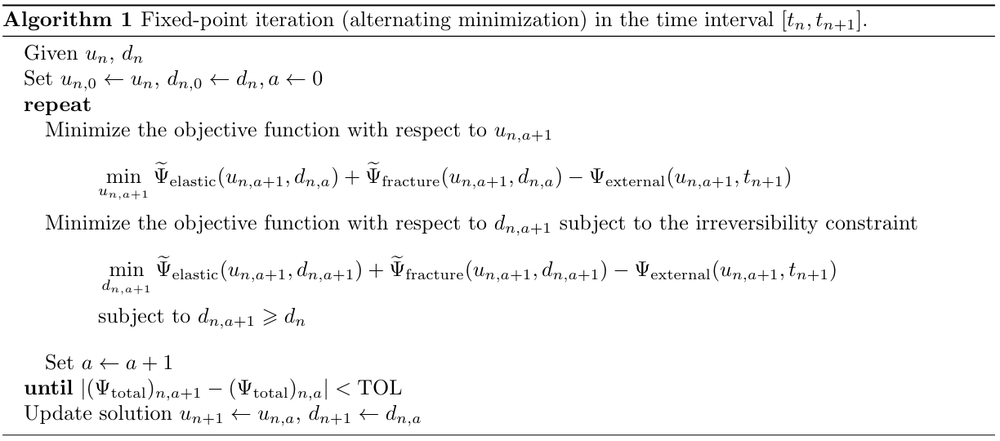

The fixed-point iterative solution scheme
To solve the non-convex minimization problem, we adopt the alternating minimization (alternating directions) strategy. The full minimization problem is split into two subproblems: In other words, the first subproblem (P1) solves for with a frozen damage field , and the second subproblem (P2) solves for the damage with a frozen fracture driving energy. Since the objective function is convex and closed in and respectively, the alternating minimization technique is able to solve the two subproblems iteratively until convergence. The solution algorithm is summarized in Algorithm 1.
Weak form and finite element discretization
The solutions to the necessary conditions of the objective functions, i.e., the governing equations, are approximated using the finite element method. We now describe the discretization of the phase-field evolution equation. Let the trial and weighting spaces be and : followed by the weak form: Using the Galerkin method, with finite dimensional function spaces , , we arrive at the Galerkin form of the problem:
RACCOON is designed bottom-up to make the implementation of this weak form modular and general. Each material or kernel definition is designated for a small portion of the entire equation, and they are coupled together to solve the entire evolution equation. Below is a table listing the terms and the corresponding kernels:
Below is a table listing the materials: